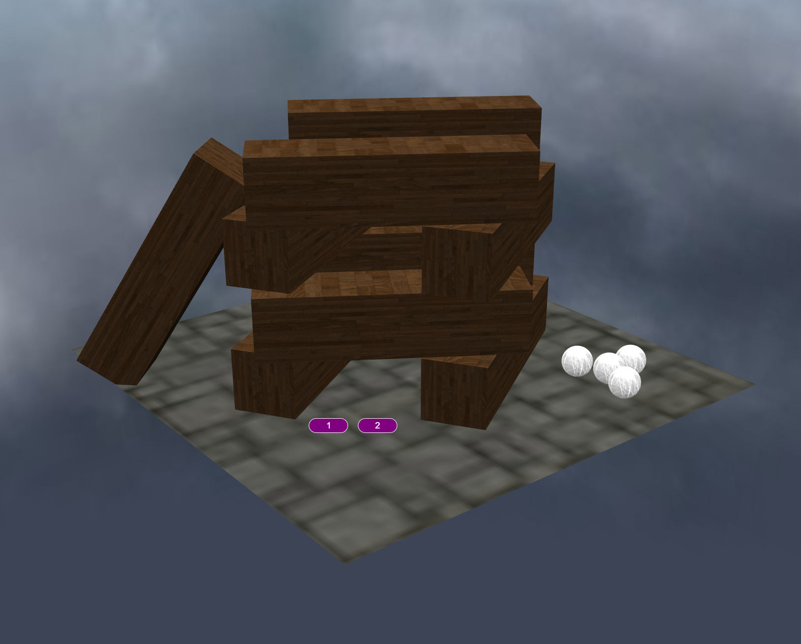
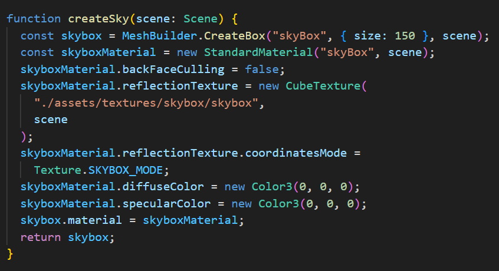
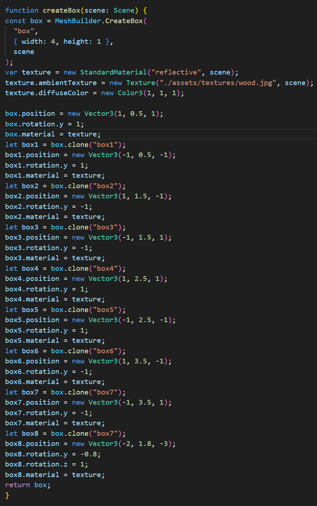
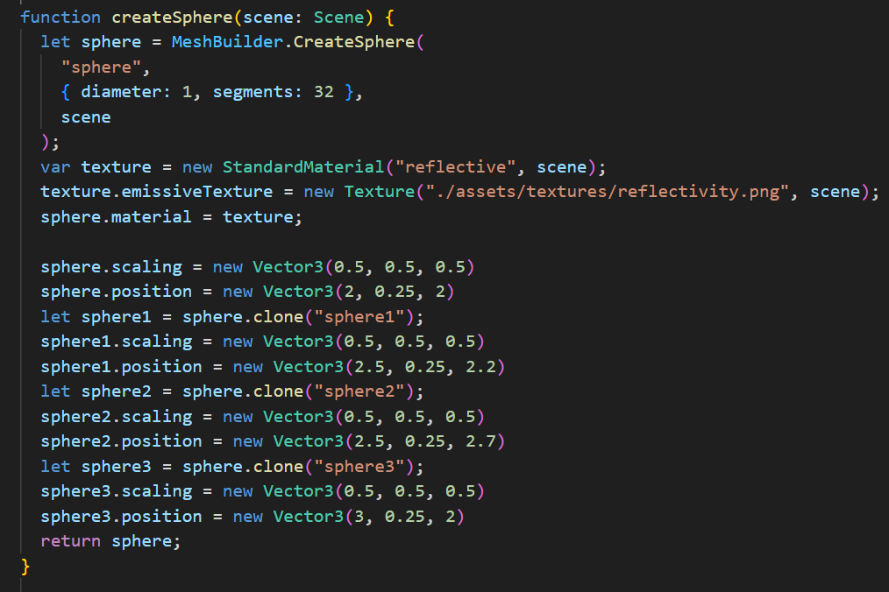
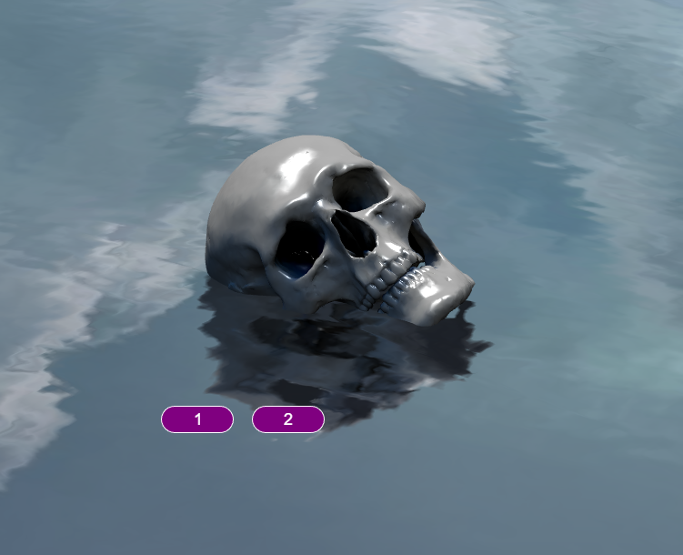
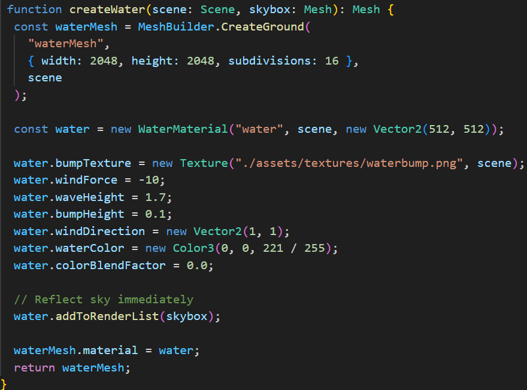
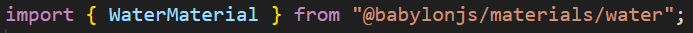
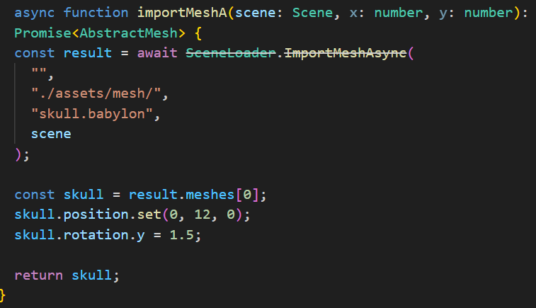
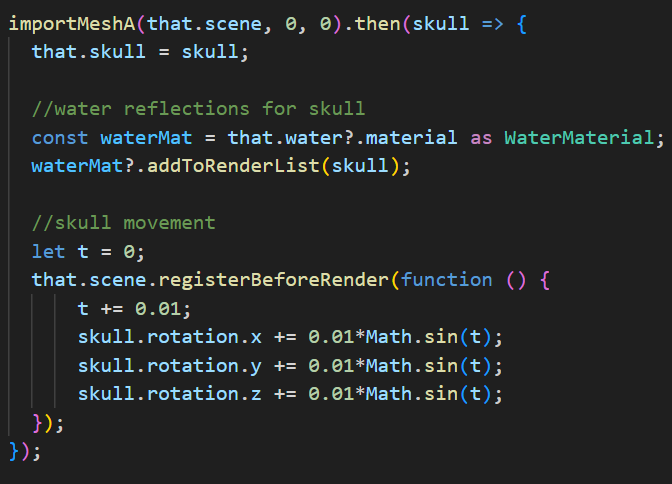

Initially for scene 1, I wanted to create a physics based scene of a jenga tower, with the user being able to control
a character and be able to knock down the tower by running into it, but unfortunatly i was unable to make the physics work
in this type of scene, I even used Element 3 as a base to try and implement the physics, but they were just not working at
all and i could not figure out why. This is the main reason why my scene 1 for element 5 is just a basic scene with shapes.
Since this scene was just shapes, it was relatively easy to make using code that I had already done before since it was just adding shapes and a skybox.
The skybox was simple as it was just the same as one I had done previously, it is just creating a large box with the sky texture,
and inside is where the scene will be, and since the scene was relatively small, the sky box did not need to be very big.
The texture is set by having 6 different images for each face of the box, all in a folder so the function can use them to apply the texture to the box.
For the wooden bricks, getting the first one into the scene was simple, I just used the createBox funcion to make it,
adjusting its size and adding the wood texture to it, however I did not want to do that over and over again, creating a lot of unnecessary lines of code,
so I looked for a solution on the Babylon Documentation and Found This which helped me create a way to
save multiple lines of code by not creating entirely new boxes, as well as save memory and create the environment faster.
This clone function allowed me to save the original elements of the wooden bricks so I would not need to constantly edit the shape and add the texture, which saved me a lot of time.
The marbles were just the exam same as the bricks, using the createSphere function to make an original copy of a marble,
and then cloning it to make multiple of them, and only needing to change their position so they do not merge into eachother.
For Scene 2, I wanted to move away from the basic objects and try something new, so I wanted to create a scene that involved water and external meshes.
I hadnt done anything like this before in the labs, so I had nothing to build on and had to start from scratch with just a basic ground plane.
So, the first thing i had to do was find a way to implement water into the scene, which is where I Found This
in the Babylon Materials library, which explained how to implement the water, as well as what assets i would need to make it work and look good.
This also gave a few example which allowed me to choose which one suited me best and what i wanted for the scene.
Creating the water material was simpler than I thought, but also a little confusing to make work properly.
First was just a basic createGround function which I already had, and then I needed to create a new water material that was made by importing it from Babylon Materials.
Then I had to download and add a bump map to the assets folder so that the water has waves and is not flat, and
the configuration settings for the water I left alone.
The skybox is mentioned here as the water needed to reflect the sky as soon as it is rendered, as they are both loaded at the same time, whereas the skull is
loaded later so the reflections are called later, when the skull has loaded into the scene.
Finding something interesting to have floating in the water was pretty easy, I just went to the babylon mesh library and followed the links until I found the Skull download
on github. Importing the mesh was also simple as we had done it before for a dummy mesh, so i just used most of that code for it,
Though some things I had to change to make it work fully.
Right at the end of the file, I put in the render for the skull reflections in the water, as that is when the skull was fully loaded and didnt
break anything else in the code. I also wanted to make the skull move a little in the water as if it was actualy floating, so with the help of A Babylon Forum
I was able to use someones codeto create a loop that rotates the skull in a way that looks like it is floating in the water.